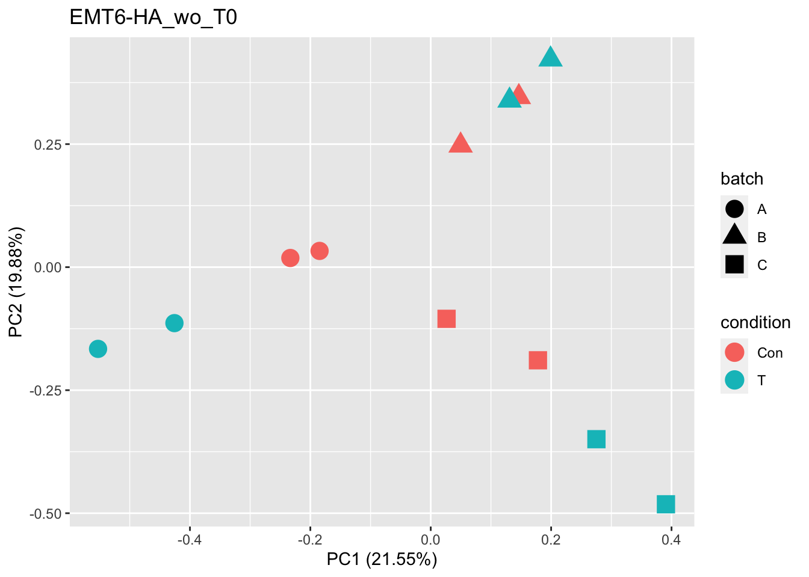
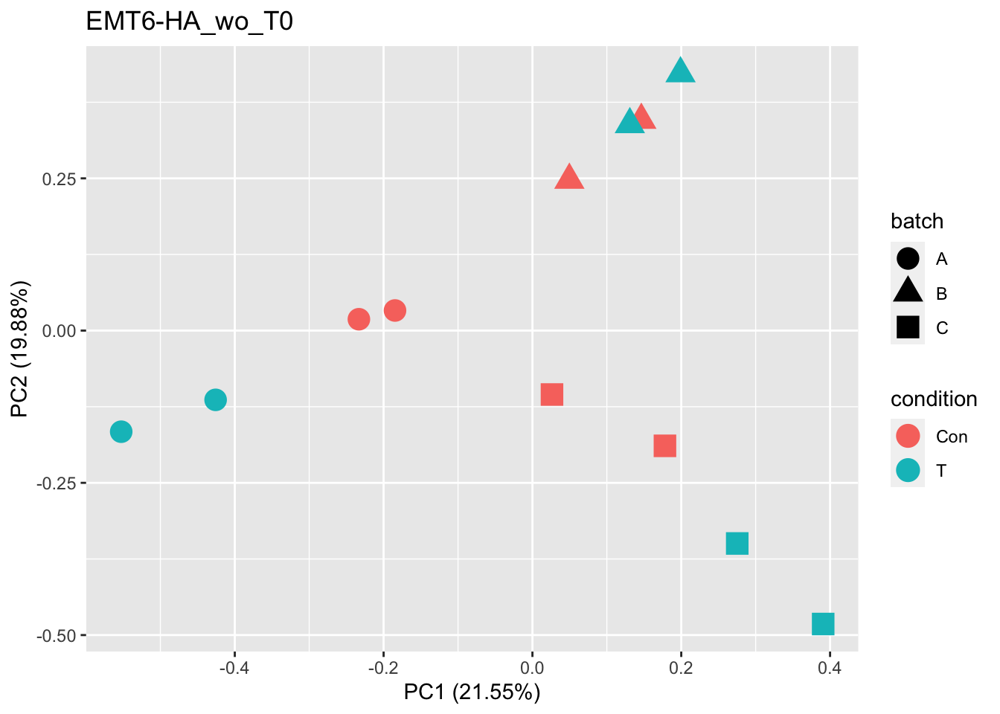

32968282_JasonMoffat_Nature_2020
BuilderPie
2021-02-05
Last updated: 2021-02-09
Checks: 6 1
Knit directory: run_MAGeCK-VISPR/
This reproducible R Markdown analysis was created with workflowr (version 1.6.2). The Checks tab describes the reproducibility checks that were applied when the results were created. The Past versions tab lists the development history.
The R Markdown file has unstaged changes. To know which version of the R Markdown file created these results, you’ll want to first commit it to the Git repo. If you’re still working on the analysis, you can ignore this warning. When you’re finished, you can run wflow_publish to commit the R Markdown file and build the HTML.
Great job! The global environment was empty. Objects defined in the global environment can affect the analysis in your R Markdown file in unknown ways. For reproduciblity it’s best to always run the code in an empty environment.
The command set.seed(20210203) was run prior to running the code in the R Markdown file. Setting a seed ensures that any results that rely on randomness, e.g. subsampling or permutations, are reproducible.
Great job! Recording the operating system, R version, and package versions is critical for reproducibility.
Nice! There were no cached chunks for this analysis, so you can be confident that you successfully produced the results during this run.
Great job! Using relative paths to the files within your workflowr project makes it easier to run your code on other machines.
Great! You are using Git for version control. Tracking code development and connecting the code version to the results is critical for reproducibility.
The results in this page were generated with repository version c1fee26. See the Past versions tab to see a history of the changes made to the R Markdown and HTML files.
Note that you need to be careful to ensure that all relevant files for the analysis have been committed to Git prior to generating the results (you can use wflow_publish or wflow_git_commit). workflowr only checks the R Markdown file, but you know if there are other scripts or data files that it depends on. Below is the status of the Git repository when the results were generated:
Ignored files:
Ignored: .DS_Store
Ignored: data/.DS_Store
Ignored: data/32968282_JasonMoffat_Nature_2020/.DS_Store
Untracked files:
Untracked: data/32968282_JasonMoffat_Nature_2020/GSE149933-GPL17021_series_matrix.txt.gz
Untracked: data/32968282_JasonMoffat_Nature_2020/GSE149933-GPL19057_series_matrix.txt.gz
Untracked: output/32968282_JasonMoffat_Nature_2020/
Unstaged changes:
Modified: analysis/32968282_JasonMoffat_Nature_2020.Rmd
Modified: data/32968282_JasonMoffat_Nature_2020/README.md
Note that any generated files, e.g. HTML, png, CSS, etc., are not included in this status report because it is ok for generated content to have uncommitted changes.
These are the previous versions of the repository in which changes were made to the R Markdown (analysis/32968282_JasonMoffat_Nature_2020.Rmd) and HTML (docs/32968282_JasonMoffat_Nature_2020.html) files. If you’ve configured a remote Git repository (see ?wflow_git_remote), click on the hyperlinks in the table below to view the files as they were in that past version.
| File | Version | Author | Date | Message |
|---|---|---|---|---|
| html | c1fee26 | BuilderPie | 2021-02-05 | Build site. |
| Rmd | 84e3693 | BuilderPie | 2021-02-05 | wflow_publish(“analysis/32968282_JasonMoffat_Nature_2020.Rmd”) |
| html | 75789d5 | BuilderPie | 2021-02-05 | Build site. |
| Rmd | e99dfcd | BuilderPie | 2021-02-05 | 32968282_JasonMoffat_Nature_2020 |
| html | 3d77077 | BuilderPie | 2021-02-05 | Build site. |
| Rmd | 01fdf7e | BuilderPie | 2021-02-05 | 32968282_JasonMoffat_Nature_2020 |
Condition alignment
library(GEOquery)
library(ggfortify)
gse = getGEO(filename="data/32968282_JasonMoffat_Nature_2020/GSE149933-GPL17021_series_matrix.txt.gz",GSEMatrix=TRUE,getGPL = FALSE)
dir.create("output/32968282_JasonMoffat_Nature_2020", recursive = T)
write.table(gse, 'output/32968282_JasonMoffat_Nature_2020/GPL17021.txt', quote = F, sep = '\t', col.names = T)
meta_GPL17021 = read.table('output/32968282_JasonMoffat_Nature_2020/GPL17021.txt', stringsAsFactors = F, sep = '\t', row.names = 1)
gse = getGEO(filename="data/32968282_JasonMoffat_Nature_2020/GSE149933-GPL19057_series_matrix.txt.gz",GSEMatrix=TRUE,getGPL = FALSE)
dir.create("output/32968282_JasonMoffat_Nature_2020", recursive = T, showWarnings = F)
write.table(gse, 'output/32968282_JasonMoffat_Nature_2020/GPL19057.txt', quote = F, sep = '\t', col.names = T)
meta_GPL19057 = read.table('output/32968282_JasonMoffat_Nature_2020/GPL19057.txt', stringsAsFactors = F, sep = '\t', row.names = 1)
treatment_GPL17021 = meta_GPL17021$characteristics_ch1.1
treatment_GPL17021[grep('Control',treatment_GPL17021, ignore.case = T)]="_Con"
treatment_GPL17021[grep('T cell',treatment_GPL17021, ignore.case = T)]="_T"
treatment_GPL17021[grep('none',treatment_GPL17021, ignore.case = T)]="_none"
treatment_GPL17021[grep('IFN-gamma',treatment_GPL17021, ignore.case = T)]="_IFNg"
treatment_GPL17021[grep('TNF-alpha',treatment_GPL17021, ignore.case = T)]="_TNFa"
treatment_GPL19057 = meta_GPL19057$characteristics_ch1.1
treatment_GPL19057[grep('Control',treatment_GPL19057, ignore.case = T)]="_Con"
treatment_GPL19057[grep('T cell',treatment_GPL19057, ignore.case = T)]="_T"
treatment_GPL19057[grep('none',treatment_GPL19057, ignore.case = T)]="_none"
treatment_GPL19057[grep('IFN-gamma',treatment_GPL19057, ignore.case = T)]="_IFNg"
treatment_GPL19057[grep('TNF-alpha',treatment_GPL19057, ignore.case = T)]="_TNFa"
title_comb = c(paste0(meta_GPL17021$title, treatment_GPL17021),
paste0(meta_GPL19057$title, treatment_GPL19057))
print(meta_GPL17021[1:14,c("title","source_name_ch1", "characteristics_ch1.1", "time.point.ch1")]) title source_name_ch1
GSM4518178 MUS_60_EMT6-HA T0 EMT6 cell line + haemagglutinin antigen
GSM4518179 MUS_61_EMT6-HA T11 A EMT6 cell line + haemagglutinin antigen
GSM4518180 MUS_62_EMT6-HA T11 B EMT6 cell line + haemagglutinin antigen
GSM4518181 MUS_63_EMT6-HA T11 C EMT6 cell line + haemagglutinin antigen
GSM4518182 MUS_64_EMT6-HA T19 A EMT6 cell line + haemagglutinin antigen
GSM4518183 MUS_65_EMT6-HA T19 B EMT6 cell line + haemagglutinin antigen
GSM4518184 MUS_66_EMT6-HA T19 C EMT6 cell line + haemagglutinin antigen
GSM4518185 MUS_67_EMT6-HA T10 A EMT6 cell line + haemagglutinin antigen
GSM4518186 MUS_68_EMT6-HA T10 B EMT6 cell line + haemagglutinin antigen
GSM4518187 MUS_69_EMT6-HA T10 C EMT6 cell line + haemagglutinin antigen
GSM4518188 MUS_70_EMT6-HA T15 A EMT6 cell line + haemagglutinin antigen
GSM4518189 MUS_71_EMT6-HA T15 B EMT6 cell line + haemagglutinin antigen
GSM4518190 MUS_72_EMT6-HA T15 C EMT6 cell line + haemagglutinin antigen
GSM4518191 MUS_47_CT26-HA T0 CT26 cell line + haemagglutinin antigen
characteristics_ch1.1 time.point.ch1
GSM4518178 treatment: none T0
GSM4518179 treatment: Control T11
GSM4518180 treatment: Control T11
GSM4518181 treatment: Control T11
GSM4518182 treatment: Control T19
GSM4518183 treatment: Control T19
GSM4518184 treatment: Control T19
GSM4518185 treatment: T cell (drop-out) T10
GSM4518186 treatment: T cell (drop-out) T10
GSM4518187 treatment: T cell (drop-out) T10
GSM4518188 treatment: T cell (drop-out) T15
GSM4518189 treatment: T cell (drop-out) T15
GSM4518190 treatment: T cell (drop-out) T15
GSM4518191 treatment: none T0rawCount = read.table(file = "data/32968282_JasonMoffat_Nature_2020/GSE149933_mTKO_readCounts_4May20.txt", header = T)
title_comb = gsub(" ", "_", title_comb)
title_trim = sub("^([^_]*_[^_]*).*", "\\1", title_comb)
colName = colnames(rawCount)
finalCount = c()
for (i in 1:length(colName)){
ind = which(title_trim == colName[i])
if (length(ind)>0){
# print(ind)
# print(colName[i])
# print(title_trim[ind])
finalCount = cbind(finalCount, rawCount[,i])
colnames(finalCount)[dim(finalCount)[2]] = sub("^([^_]*_[^_]*).", "", title_comb[ind])
# print(title_comb[ind])
# print(colnames(finalCount)[dim(finalCount)[2]])
}
}
finalCount = as.data.frame(finalCount)
cellline = c("EMT6-HA_", "CT26-HA_", "4T1-HA_", "B16-Ova_", "MC38-Ova_", "Renca-HA_")
for (cl in cellline){
# print(cl)
df = as.data.frame(t(finalCount[, grep(cl, colnames(finalCount))]))
df$species = gsub(pattern = cl, replacement = '', rownames(df))
df$species = gsub(pattern = "_", replacement = '', df$species)
rownames(df) = df$species
# df[ , which(apply(df, 2, var) != 0)]
# pca_res <- prcomp(df[,-dim(df)[2]], scale. = TRUE)
pca_res <- prcomp(df[,-dim(df)[2]])
print(autoplot(pca_res, data = df, colour = 'species', label = TRUE, label.size = 4,
# xlim = c((1.3*min(pca_res$rotation[,'PC1'],na.rm=T)-0.3*max(min(pca_res$rotation[,'PC1'],na.rm=T))),
# (1.3*max(pca_res$rotation[,'PC1'],na.rm=T)-0.3*min(pca_res$rotation[,'PC1'],na.rm=T))),
# ylim = c((1.3*min(pca_res$rotation[,'PC2'],na.rm=T)-0.3*max(min(pca_res$rotation[,'PC2'],na.rm=T))),
# (1.3*max(pca_res$rotation[,'PC2'],na.rm=T)-0.3*min(pca_res$rotation[,'PC2'],na.rm=T))),
main = paste0(cl, "PCA")))
}
 


write.table(x = finalCount, file = 'output/32968282_JasonMoffat_Nature_2020/32968282_JasonMoffat_Nature_2020_rawcount.txt', quote = F, sep = '\t', col.names = T)
sessionInfo()R version 3.6.1 (2019-07-05)
Platform: x86_64-apple-darwin15.6.0 (64-bit)
Running under: macOS Catalina 10.15.7
Matrix products: default
BLAS: /Library/Frameworks/R.framework/Versions/3.6/Resources/lib/libRblas.0.dylib
LAPACK: /Library/Frameworks/R.framework/Versions/3.6/Resources/lib/libRlapack.dylib
locale:
[1] en_US.UTF-8/en_US.UTF-8/en_US.UTF-8/C/en_US.UTF-8/en_US.UTF-8
attached base packages:
[1] parallel stats graphics grDevices utils datasets methods
[8] base
other attached packages:
[1] ggfortify_0.4.11 ggplot2_3.3.2 GEOquery_2.54.1
[4] Biobase_2.46.0 BiocGenerics_0.32.0
loaded via a namespace (and not attached):
[1] Rcpp_1.0.5 pillar_1.4.6 compiler_3.6.1 later_1.1.0.1
[5] git2r_0.27.1 workflowr_1.6.2 tools_3.6.1 digest_0.6.27
[9] gtable_0.3.0 evaluate_0.14 lifecycle_0.2.0 tibble_3.0.4
[13] pkgconfig_2.0.3 rlang_0.4.8 cli_2.1.0 rstudioapi_0.11
[17] yaml_2.2.1 xfun_0.18 gridExtra_2.3 withr_2.3.0
[21] xml2_1.3.2 stringr_1.4.0 dplyr_1.0.2 knitr_1.30
[25] hms_0.5.3 generics_0.0.2 fs_1.5.0 vctrs_0.3.4
[29] grid_3.6.1 rprojroot_1.3-2 tidyselect_1.1.0 glue_1.4.2
[33] R6_2.4.1 fansi_0.4.1 rmarkdown_2.5 limma_3.42.2
[37] farver_2.0.3 tidyr_1.1.2 purrr_0.3.4 readr_1.4.0
[41] magrittr_1.5 whisker_0.4 scales_1.1.1 backports_1.1.10
[45] promises_1.1.1 ellipsis_0.3.1 htmltools_0.5.0 assertthat_0.2.1
[49] colorspace_1.4-1 httpuv_1.5.4 labeling_0.4.2 stringi_1.5.3
[53] munsell_0.5.0 crayon_1.3.4